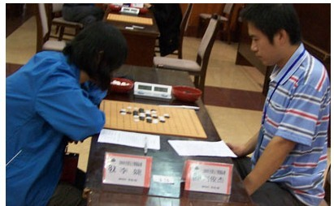

#2 Re:大雪棋评 作者：米 发表时间：2009-10-20 6:29:32
=======上图对应的爱五子棋谱代码如下，以便你拆解：========
h8h9h6i10i6i9g9g8j11i7i8k7g6j6f8h10j8e6f7k10j10j9k8l8i5g7l9h5e10f10d6m10f5f6d5e5d9d7c8b7e7c5c11e8f9e9d11g11g12f11d8c12
======================================================
=======上图对应的爱五子棋谱代码如下，以便你拆解：========
h8h9h6i10i6i9g9g8j11i7i8k7g6j6f8h10j8e6f7k10j10j9k8l8i5g7l9h5e10f10d6m10f5f6d5e5d9d7c8b7e7c5c11e8d11h11g12f11f9e9d8c12
======================================================
这棋评写得好。补充一下，就是黑43貌似强手却必败无疑，上面是两个其它的分支，总之白肯定能防住黑左上而黑顾此失彼无法一手棋全盘都防住白。黑43或许可以考虑走实战黑45这个点。总结一下这盘，白32是亮点，在实战中走出实在令人钦佩不已，自白44至终局白虽两次错过简单胜但自44后白每步落下都是白必胜局面，黑难逃一劫。
［ 茗弈小刀 于 2009-11-3 17:33:29 时花20金币送鲜花一朵］
#3 Re:大雪棋评 作者：左伟光 发表时间：2009-10-20 8:53:17
41在这：
=======上图对应的爱五子棋谱代码如下，以便你拆解：========
h8h9h6i10i6i9g9g8j11i7i8k7g6j6f8h10j8e6f7k10j10j9k8l8i5g7l9h5e10f10d6m10f5f6d5e5d9d7c8b7c11
======================================================
#4 Re:大雪棋评 作者：左伟光 发表时间：2009-10-20 8:56:58
46后这样：
=======上图对应的爱五子棋谱代码如下，以便你拆解：========
h8h9h6i10i6i9g9g8j11i7i8k7g6j6f8h10j8e6f7k10j10j9k8l8i5g7l9h5e10f10d6m10f5f6d5e5d9d7c8b7e7c5c11e8d11h11g12f11f9
======================================================
#5 Re:Re:大雪棋评 作者：米 发表时间：2009-10-20 9:51:31
=======上图对应的爱五子棋谱代码如下，以便你拆解：========
h8h9h6i10i6i9g9g8j11i7i8k7g6j6f8h10j8e6f7k10j10j9k8l8i5g7l9h5e10f10d6m10f5f6d5e5d9d7c8b7c11e7e8c10d8b8e4h7j7m12
======================================================
3楼的走法白必胜，变化如图，得先手右上白一跳黑就防不住了。4楼白50走黑49左边e9必胜，这和我二楼摆的第二图完全一样。
［ 茗弈小刀 于 2009-10-20 11:09:45 时奖励此帖[金币加 20 威望加1］
#6 Re:大雪棋评 作者：唐门小虎 发表时间：2009-10-20 10:13:56
这人好厉害呀，莫非是传说中的棋神
#7 Re:Re:大雪棋评 作者：茗弈宽容 发表时间：2009-10-21 14:27:52

大雪无痕---雪儿
#8 Re:大雪棋评 作者：屏蔽 发表时间：2009-10-21 18:44:52
我觉得这不是学的瑞星局而是中盘嗯……不过这个定式确实比较典型，对局分析得很好。
P.S. 领导没告诉你这个哪个实战对局噻？
#9 Re:大雪棋评 作者：测试规则 发表时间：2009-10-21 19:13:17
话说小刀写的棋评绝大都是顾炜的，不知为什么
#10 Re:Re:大雪棋评 作者：大雪无痕 发表时间：2009-10-21 19:29:53
我觉得这不是学的瑞星局而是中盘嗯……不过这个定式确实比较典型，对局分析得很好。
P.S. 领导没告诉你这个哪个实战对局噻？
第六届“经纬杯”上海连珠名人邀请赛预赛第三轮，瑞星局（交换），5A=I7，贺茂雪（黑）负顾炜（白）
紧跟领导的步伐，不管是谁的局，我只认棋不认人
#11 Re:大雪棋评 作者：茗弈求学 发表时间：2009-10-21 20:02:31
9楼朋友,你的对局也可以发出来叫小刀师傅写呀!